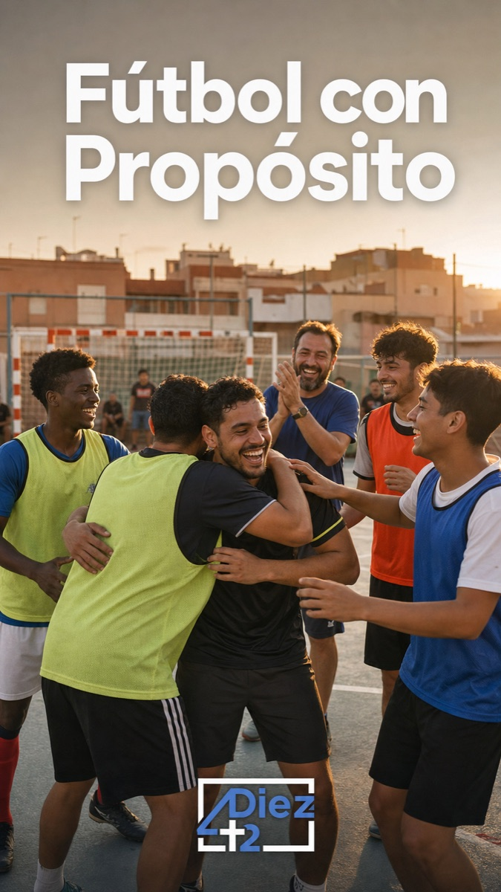
01
Fútbol con Propósito
Deporte, trabajo en equipo y amistad para conectar con la comunidad.
Escanea el código o pulsa el botón para unirte.
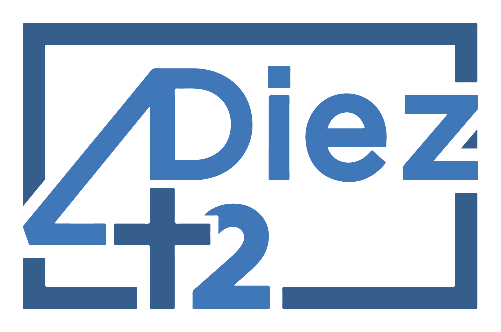
Asociación para el Desarrollo e Integración
Welcome and practical help in Málaga.
Aquí eres bienvenido.
أهلاً بك. لك مكان هنا.
Ласкаво просимо. Тут є місце для вас.
Bienvenue. Vous avez votre place ici.
Welcome. You belong here.
About
Diez42 serves immigrants, refugees, and other newcomers in Málaga through practical support, education, training, family activities, food support, and steady community presence.
Diez42 existe para servir a refugiados y comunidades migrantes vulnerables en el sur de España, ofreciendo ayuda práctica, acompañamiento cercano y guía espiritual, arraigados en el amor de Cristo.
Ver a refugiados y familias vulnerables acogidos, apoyados e integrados en la sociedad española a través de una comunidad centrada en Cristo, donde encuentren esperanza, apoyo y pertenencia.
Todos nuestros servicios están abiertos a cualquier persona, sin importar su religión, origen o situación. Somos una comunidad cristiana y compartimos nuestra fe con respeto; nunca es una condición para recibir ayuda.
Programas

Deporte, trabajo en equipo y amistad para conectar con la comunidad.
Escanea el código o pulsa el botón para unirte.
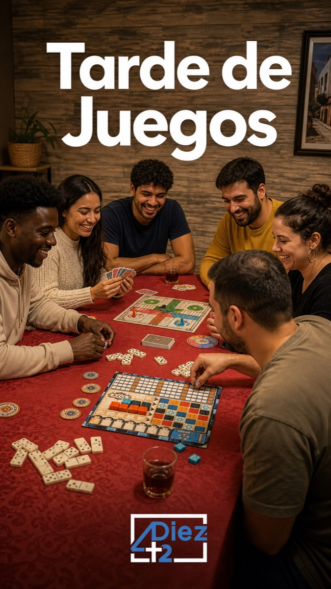
Un espacio para compartir juegos, conocernos y disfrutar juntos.
Escanea el código o pulsa el botón para unirte.
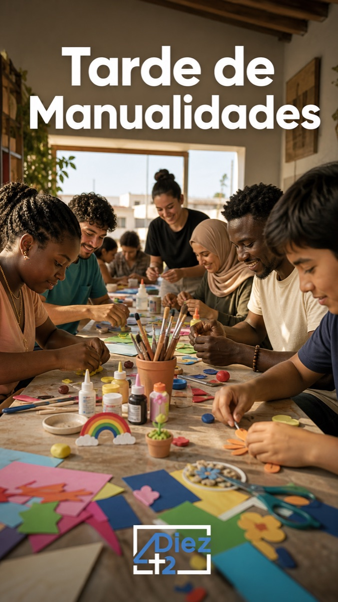
Actividades creativas para aprender, compartir ideas y crear juntos.
Escanea el código o pulsa el botón para unirte.
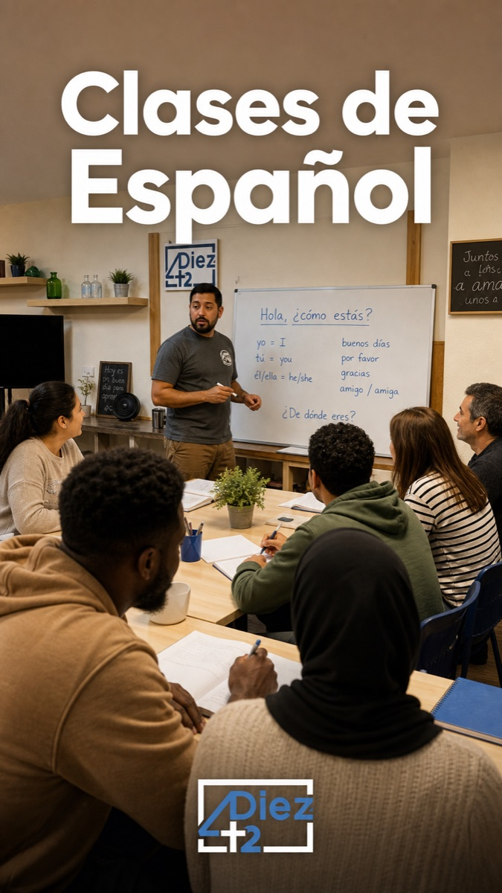
Aprendizaje y práctica del español para la vida cotidiana.
Escanea el código o pulsa el botón para unirte.
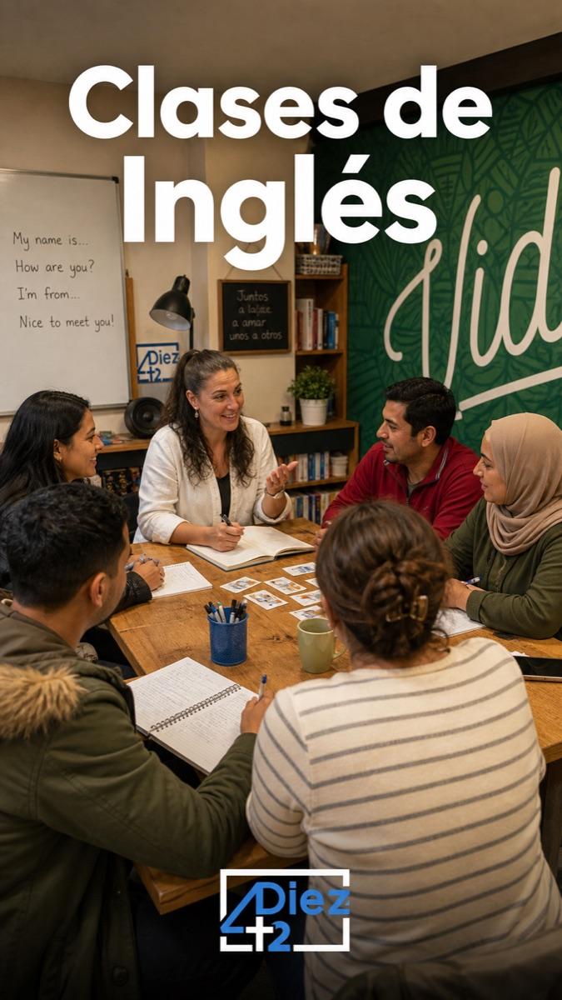
Un espacio para aprender inglés y practicar la conversación.
Escanea el código o pulsa el botón para unirte.
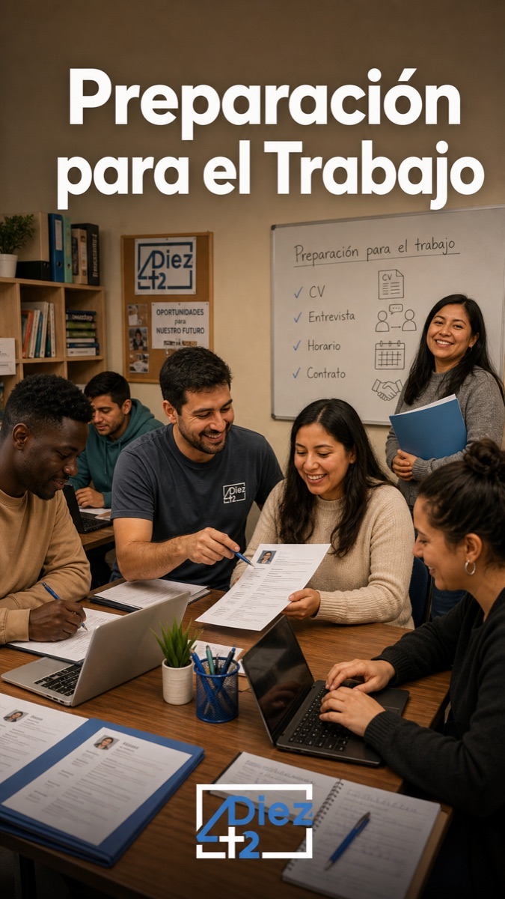
Apoyo para preparar el currículum, las entrevistas y los próximos pasos laborales.
Escanea el código o pulsa el botón para unirte.
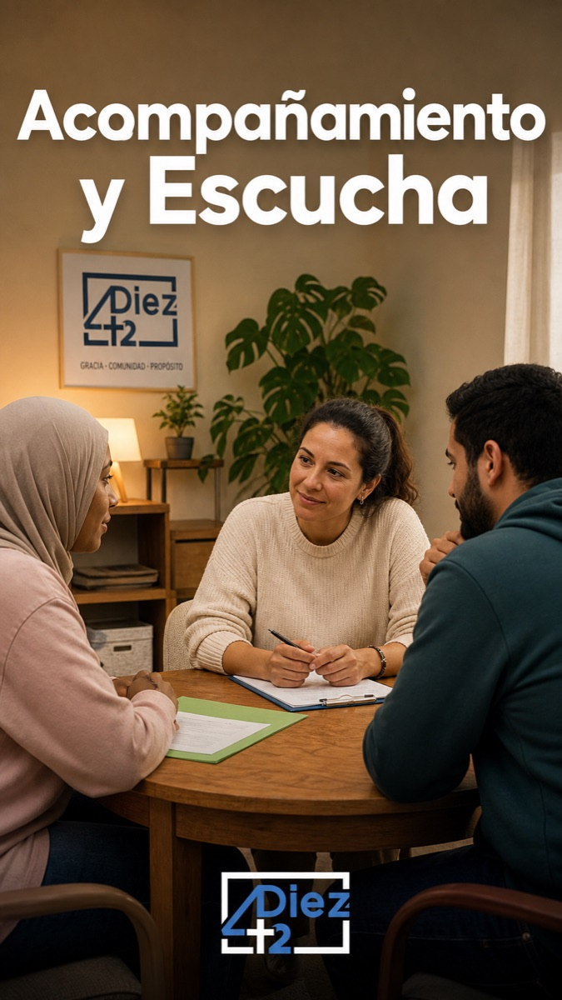
Un espacio de escucha, orientación y apoyo cercano.
Escanea el código o escríbenos para más información.
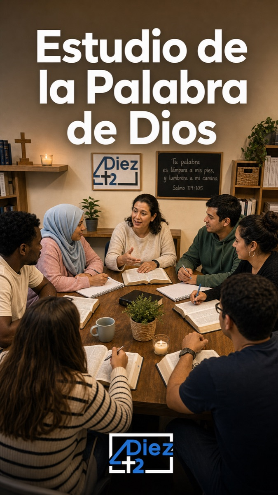
Encuentros para leer la Biblia, compartir preguntas y reflexionar juntos.
Escanea el código o escríbenos para más información.
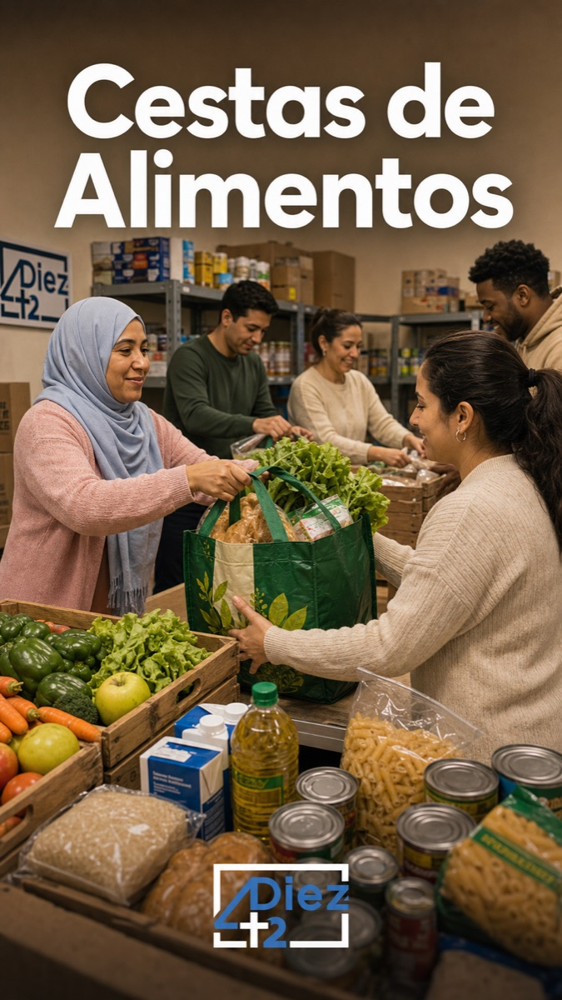
Apoyo alimentario para acompañar a las familias en sus necesidades cotidianas.
Escanea el código o escríbenos para más información.
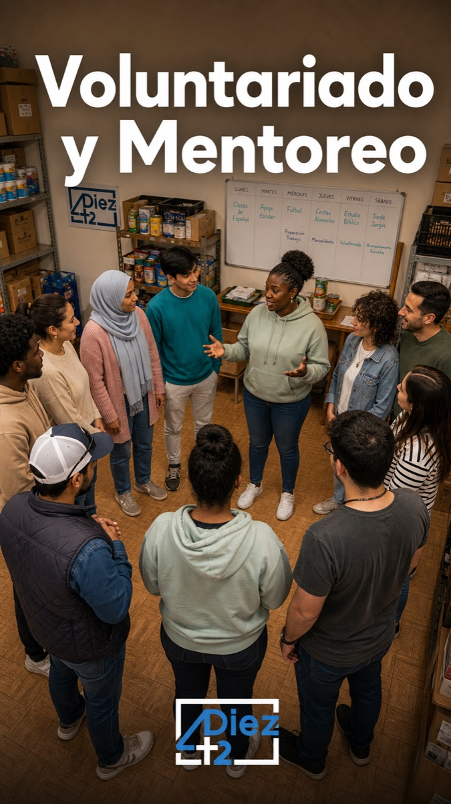
Oportunidades para servir, compartir experiencia y acompañar a otras personas.
Escanea el código o escríbenos para más información.
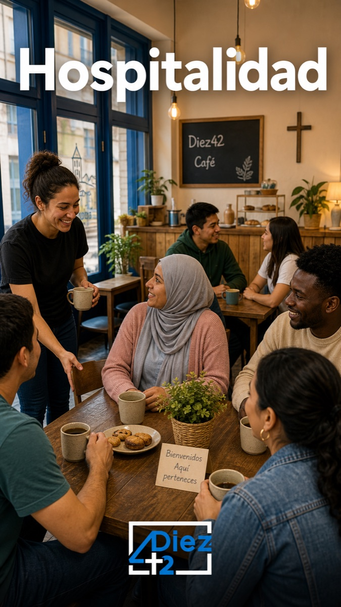
Un lugar de acogida para conversar, compartir y sentirse parte de la comunidad.
Escanea el código o escríbenos para más información.
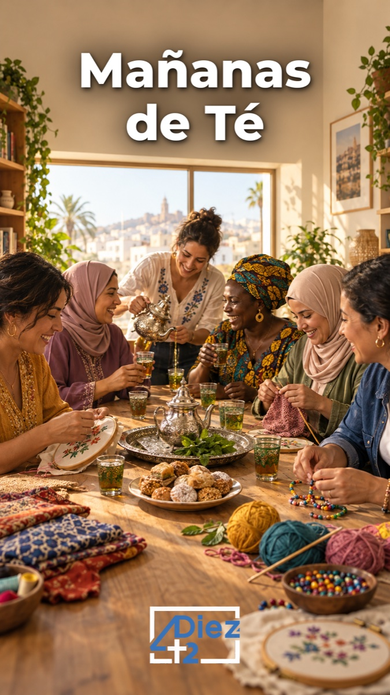
Te invitamos a unirte a nosotras en una sesión de té, buena conversación y manualidades.
Todos los jueves, de 10:30 a 12:15.
Escanea el código o pulsa el botón para unirte.